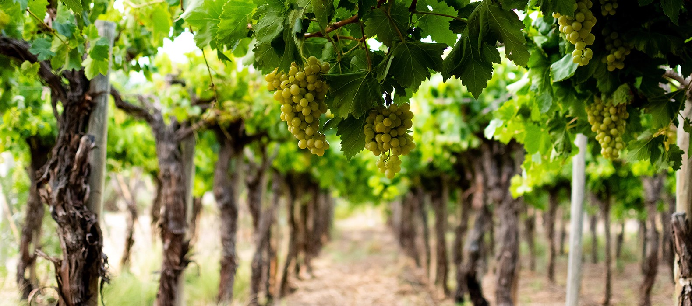
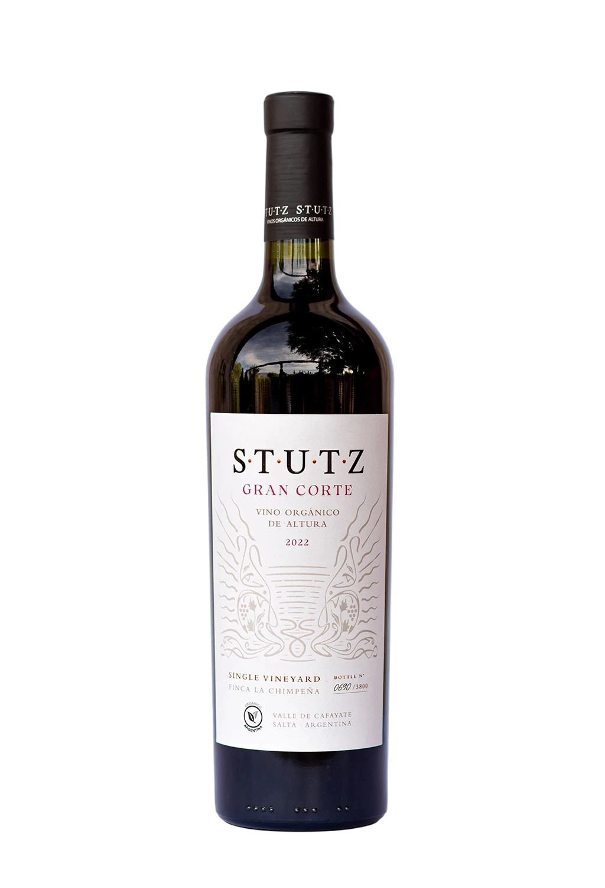
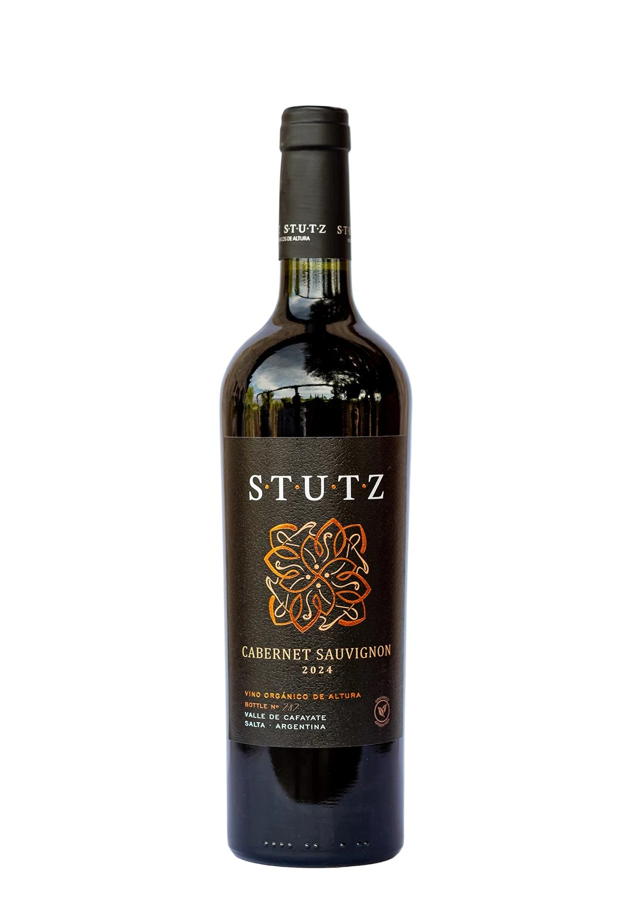
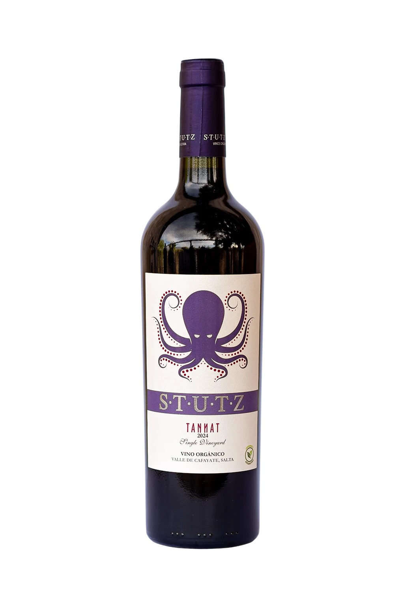
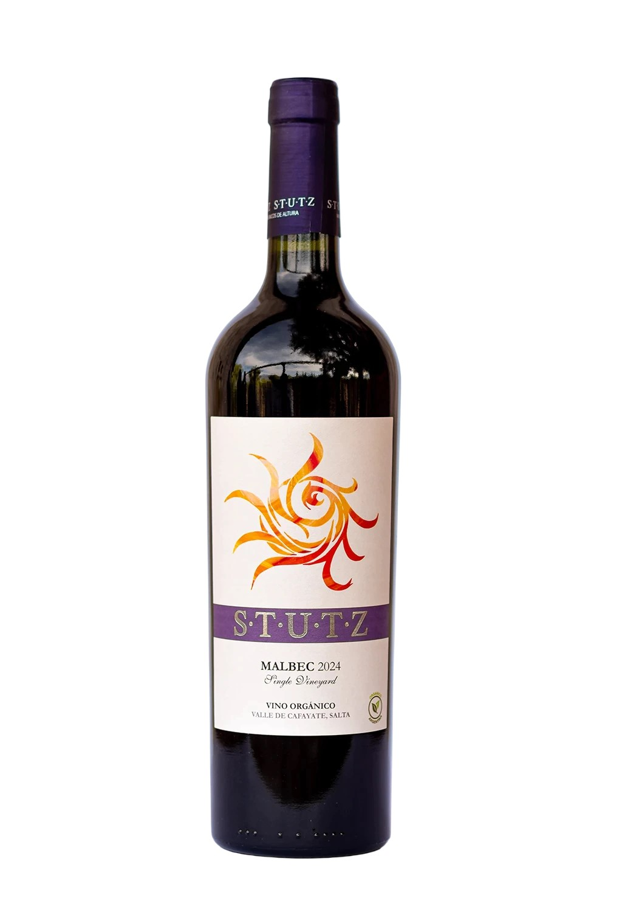
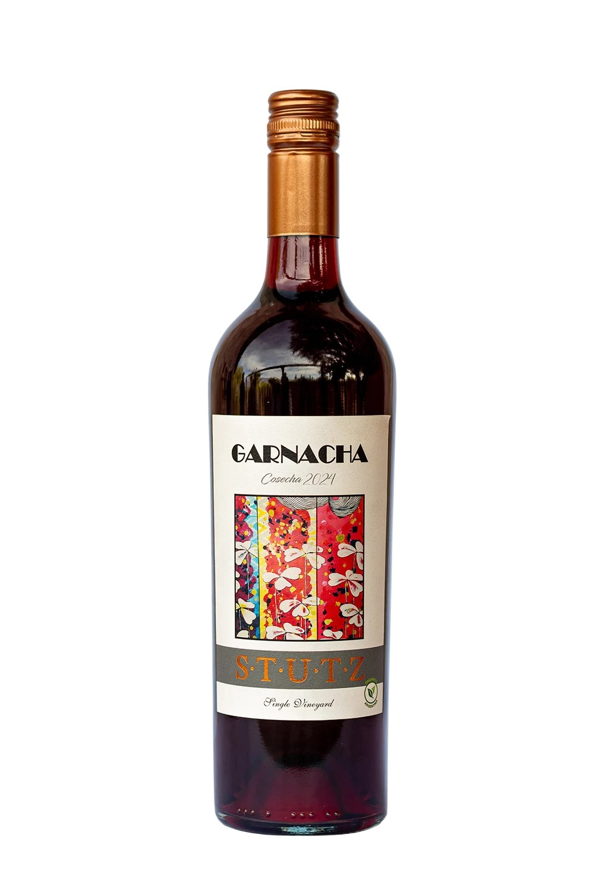
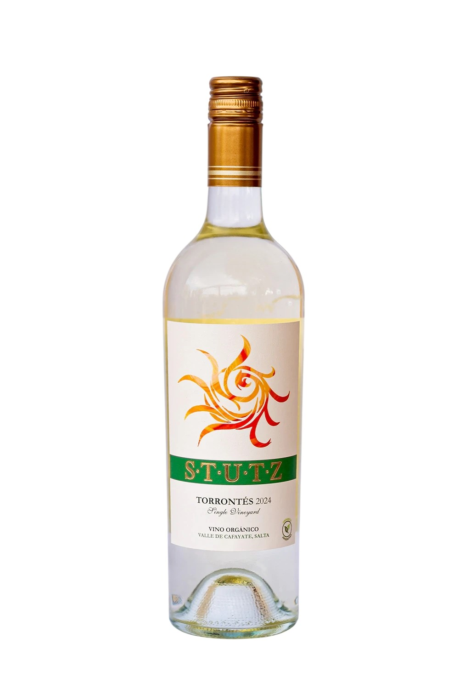
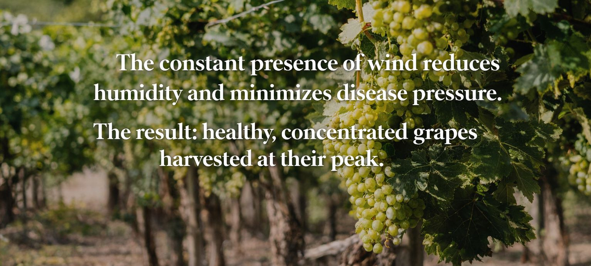
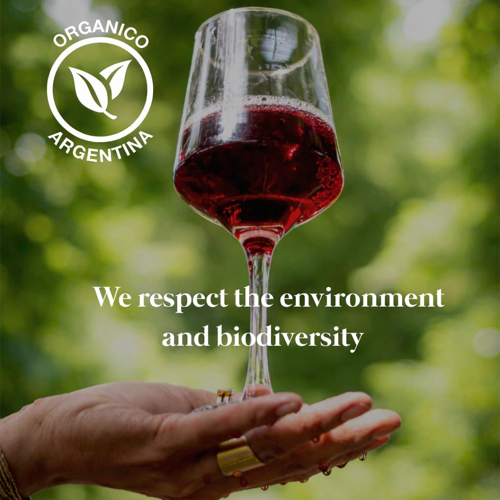
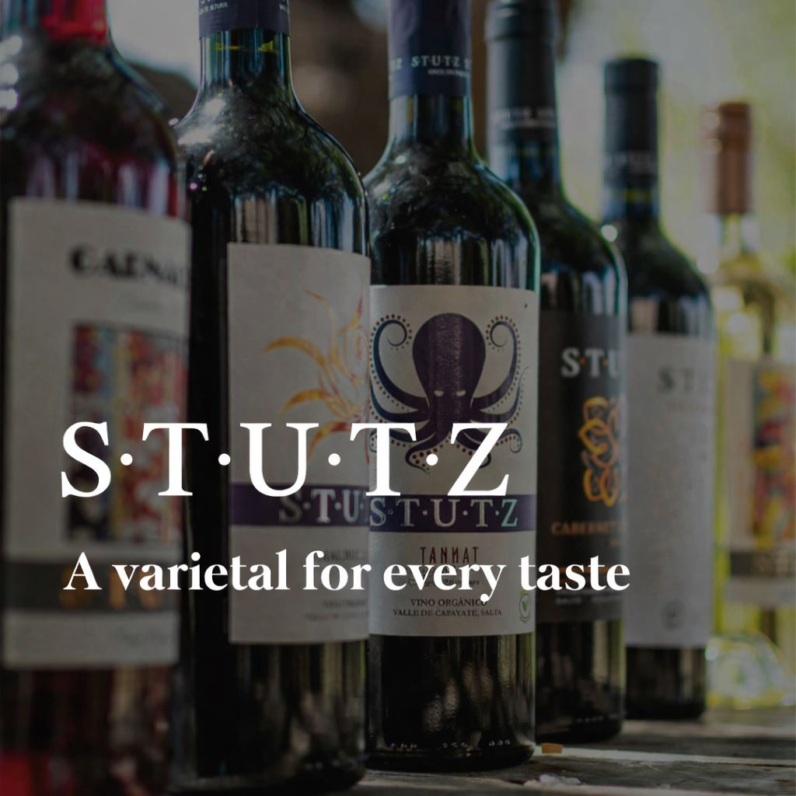

Welcome To Our Winery!
It's Nice To Meet You
About
Who we are
Como en un museo, en la senda Calchaquí, la naturaleza nos provee de su arte infinito a través de las uvas.
Ubicada donde el sol y el viento siempre acompañan al compás creando melodías inspiradoras, está Finca LA CHIMPEÑA. Enclavada en medio de arenales y montañas, premia un año de esfuerzo con uva madura, con la que nuestro enólogo concreta la alquimia de crear el VINO STUTZ, que desde 2007 invita a disfrutar del placer del vino en una combinación mágica de sabores cafayateños.
La estrella indiscutida de STUTZ es el Torrontés. Y no es casualidad, ya que Cafayate es reconocida a nivel mundial por este varietal. Ricardo Stutz, fundador de este sueño, decía: “(...) (el Torrontés) es un vino que se disfruta.
No importa cuánto tiempo haya pasado desde que se lo probó por primera vez, cuando se lo vuelve a degustar, se lo reconoce. Es ahí donde yace su grandeza y la diferencia con el resto de los varietales.”
Como la geografía misma, nuestro corazón está al Norte y sentimos la pasión corriendo por la sangre. Por eso, dentro de nuestros varietales están los colores intensos, las uvas tintas que al saborearlas dejan sus tonos profundos marcados en los labios. A ellas, las descubrimos en forma de Tannat, Malbec y Cabernet Sauvignon.
Por último, pero no menos importante, en honor a las nuevas generaciones, al cambio, a las ideas frescas y renovadas; creamos un blend como combinación de los tres varietales tintos. El popurrí justo que nos brindan las uvas en todo su esplendor.
Us
Finca La Chimpeña está ubicada a unos kilómetros de la ciudad de Cafayate (Salta). Allí donde el sol siempre está expectante, atento, intacto; pero nunca solo: la brisa lo acompaña firme, constante. La combinación exacta y excepcional que hace del producto de nuestra tierra y esfuerzo una fruta de calidad única, sin la necesidad de interferir en el proceso natural con la aplicación de agroquímicos.
El trabajo en armonía con la naturaleza y el cuidado del medio ambiente nos permitieron iniciar la certificación orgánica de nuestro terroir en junio de 2015.
Porque creemos en lo que hacemos, los vinos STUTZ son elaborados exclusivamente con uvas de producción propia, asegurando que el vino que llega a la copa, esa misma compartida en familia o con amigos, sea de calidad y excelencia.
Nosotros, los que elaboramos vinos STUTZ, lo compartimos en nuestra propia mesa, lo disfrutamos en cada puesta del sol con nuestras familias. Y como familia es que, con total convicción se los recomendamos a la tuya. Salud.
Our Wines
“Wine is sunlight united by water.” Galileo Galilei
- All
- Red
- White

Gran Corte Stutz
Tannat 35%, Malbec 35%, Cabernet Sauvignon 30% Color rojo rubí de intensidad media, límpido y brillante, que anticipa frescura y elegancia. En nariz es un vino elegante y complejo, con carácter especiado, frutal y tostado. Notas de frutos rojos y negros caramelizados como arándanos y cerezas, con matices de regaliz, pimienta negra, pimientos asados e incienso. Entrada amable, con medio de boca franco que expresa frutalidad y especias. Acidez sutil y taninos aterciopelados. Final de boca equilibrado y placentero. Maridaje ideal para pastas con salsas de tomate, quesos duros y semiduros (como gouda, parmesano o pepato), carnes rojas especiadas y vegetales asados. Acompaña especialmente bien un lomo a la pimienta negra. Fermentación en tanques de acero inoxidable. Espalderos con 20 años de edad promedio.

Cabernet Sauvignon Stutz
Color rojo rubí con tonos violáceos. Límpido, brillante y profundo, con buena densidad visual. Aromas de frutos rojos y negros maduros como ciruelas, cassis y moras con notas especiadas y herbales, con carácter pirazínico marcado, pimientos asados, pimentón y un delicado fondo mineral. En boca entrada dulce y amable. Taninos firmes pero redondeados, con acidez suave y equilibrada. Final persistente con notas especiadas y vegetales asados. Excelente para acompañar carnes rojas asadas, estofados, carnes de caza, quesos semiduros y duros, pastas con salsas intensas. Fermentación en tanques de acero inoxidable. Espalderos con 20 años de edad promedio. Chimpa, situada a 9 kilómetros del pueblo en línea recta, se beneficia de condiciones climáticas excepcionales: baja humedad, vientos diarios y tres horas adicionales de sol respecto a la zona núcleo.

Tannat Stutz
De color púrpura profundo, con centro negro, vivo y brillante, reflejando juventud y frescura. Aromas intensos y envolventes de frutas negras maduras como moras y arándanos con notas de cuero, tabaco dulce, y un sutil toque mineral propio de los suelos arenosos de altura. Entrada potente y estructurada. Taninos firmes pero redondeados, que aportan buen cuerpo y persistencia. Sabores de ciruela negra, regaliz, y una agradable nota de cacao amargo en el final. Equilibrio entre acidez vibrante y alcohol contenido. Ideal para acompañar carnes asadas, platos con salsas especiadas, o quesos duros de vaca. Fermentación del Tannat en tanques de acero inoxidable Chimpa, situada a 7 kilómetros del pueblo, se beneficia de condiciones climáticas excepcionales: baja humedad, vientos diarios y tres horas adicionales de sol respecto a la zona núcleo.

Malbec Stutz
Color violeta profundo con destellos rubí, límpido y brillante. En nariz presenta gran intensidad aromática conjugando frutos rojos y negros bien maduros como, confituras de ciruelas, frambuesas negras, frutilla, cerezas rojas y negras con suaves matices especiados de pimienta rosa y negra. En boca es un vino de buena estructura con taninos amplios y suaves. Se desarrolla revelando su jugosa frutalidad con un final largo y persistente. Perfecto para acompañar carnes asadas, quesos semiduros y duros, pastas con salsa a base de tomate. Postres con frutos rojos y chocolate amargo. Fermentación en tanques de acero inoxidable. Espalderos con 20 años de edad promedio. Chimpa, situada a 7 kilómetros del pueblo, se beneficia de condiciones climáticas excepcionales: baja humedad, vientos diarios y tres horas adicionales de sol respecto a la zona núcleo.

Garnacha Stutz
Color rojo guinda, límpido y brillante. Delicado y traslúcido, con tonalidades cereza que reflejan frescura y juventud. Aromas de fruta roja fresca como frambuesa, guinda y cereza. Notas de té negro, pimienta blanca e incienso. Fondo levemente terroso y especiado. En Boca entrada amable y fluída. Taninos suaves, buena acidez que aporta frescura. Final persistente con carácter frutado y especiado. Ideal para carnes blancas y rojas magras, quesos blandos y semiduros, frutos secos, ensaladas, wok de verduras y platos típicos españoles. Fermentación en huevos de concreto. Espalderos y Parrales con edad promedio de 20 años. Injertados sobre pié Torrontés. Chimpa, situada a 7 kilómetros del pueblo, se beneficia de condiciones climáticas excepcionales: baja humedad, vientos diarios y tres horas adicionales de sol respecto a la zona núcleo.

Torrontés Stutz
De color amarillo pálido con destellos verdosos. Brillante, vivaz y translúcido, típico de la variedad y del clima seco de altura. Aromas intensos y frescos, se encuentran frutas blancas como pera, durazno y ananá. Notas cítricas de lima y pomelo amarillo. Fondo floral con azahar y jazmín. En Boca entrada sutil y elegante. Buena acidez que aporta frescura y carácter. Final envolvente, persistente y armonioso. Recomendado para pescados y mariscos, empanadas salteñas, locro, cocina asiática (sushi, curry), platos especiados y picantes. Parrales a más de 1.700 metros de altitud, clima seco, amplitud térmica y los suelos característicos permiten que esta cepa autóctona despliegue toda su intensidad aromática y frescura natural.

{kind=link}
{kind=link}
{kind=link}
{kind=link}
{kind=link}
{kind=link}
Torrontés Tardio Stutz
Fermentación lenta en en tanques de acero que se interrumpe en frío, a 5°C, para conservar azúcares naturales y evitar una sobrefermentación 4980 botellas - Cosecha a mano en gamelas de 18kg. De color Amarillo con destellos plateados y acerados. Límpido, brillante y vivaz. Aromas intensos y seductores. Frutado (ananá, durazno, pera, litchi), floral (flores blancas, azahar, jazmín) y dulzón, notas cítricas frescas que aportan complejidad. Entrada en boca aterciopelada y dulce. Coincide con su nariz: fruta tropical y floral. Final persistente, fresco y envolvente. Recomendado para postres como lemon pie, crumble de peras, tarta de frutas. Quesos blandos y azules (brie, camembert, roquefort), frutos secos, cocina asiática especiada.



Galery
Contact
Thank you for contacting Stutz Wines, we will respond to your inquiry shortly.